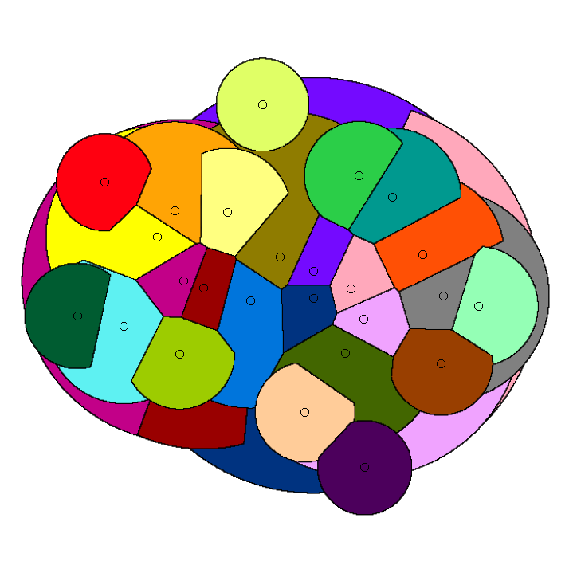
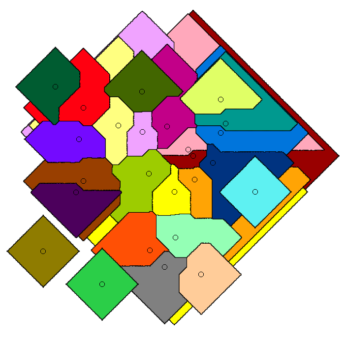

Publications
Click on a title for a brief summary. All the papers are freely available online (click the PDF icon). The other icons are for associated websites and/or source code, when available.
PhD Thesis
-
See the document and the slides from the defense.
The nearest-neighbor chain algorithm was proposed in the eighties as a way to speed up certain clustering algorithms. We show that its application is not limited to clustering: we adapt it to speed up several greedy algorithms for geometric and combinatorial problems.
Greedy algorithms have in common that they construct the solution one step at a time. At each step, if there are multiple options for extending the solution constructed so far, the option optimizing a given criteria is selected (the choice that appears to contribute the most towards a good solution). Greedy algorithms are appealing because of their simplicity. Even when greedy algorithms are not optimal, they often find good solutions.
Our technique for speeding up greedy algorithms consists of two steps. First, we weaken the selection rule of the greedy algorithm so that it may select
suboptimal
choices according to the criteria, but then we prove that the final solution is the same nonetheless. In a sense (formalized in the thesis), our algorithms make locally-optimal choices rather than globally-optimal ones. Second, we use NNC-based algorithms to navigate to these locally-optimal choices faster than the original greedy algorithm can find the globally-optimal ones. With these two ingridients, we obtain alternative algorithms that are faster and produce the same solution.The thesis also has a second part about stable-matching Voronoi diagrams (see paper [J5] below). Overall, the thesis is based on papers [J2,J3,J4,J5,J6,C3] below.
In submission
-
In the knight's tour puzzle a knight starts in the top-left corner of a chess board. The challenge is to visit every square, without repetition, using only knight moves. This puzzle becomes an interesting computational problem when generalized to n x n boards for any n. In particular, sequential heuristics such as Warnsdorff's algorithm quickly reveal their exponential nature.
Before this paper, all the efficient algorithms for the generalized knight's tour were based on a divide-and-conquer strategy, where the board is split into four quadrants, each quadrant is solved recursively, and then some of the boundary moves are changed to concatenate the different bits together. We propose the first algorithm following a completely new approach, where the knight repeatedly crosses the entire board in long lines of moves in the same direction. In doing so, we prove the existence of knight's tours in n x n boards with only O(n) crossings (points where the knight crosses over its prior path). All prior algorithms have O(n2) crossings. We also extended our algorithm to 3D boards, giraffe tours, and other generalizations.


Conference publications
-
[J6] Euclidean TSP, Motorcycle Graphs, and Other New Applications of Nearest-Neighbor Chains, ISAAC'19.
This paper contains some of the results from the thesis on speeding up greedy algorithms (read the thesis' summary above). For instance, we improve the runtime of the multi-fragment algorithm for Euclidean TSP from O(n2) to O(n log n).

.")
Imagine that you have a set of facilities in the plane, such as post offices, and you are tasked with assigning a service region to each one, under two constraints. First, each service region should be close to the corresponding facility. Second, all the service regions should have the same area. If we drop the second condition, we end up with the well known Voronoi diagram. The Voronoi diagram assigns each point in the plane with the closest facility.
Stable matching Voronoi diagrams are a generalization that also addresses the second constraint by borrowing the notion of stable matching from the field of market design. Stable matching studies how to pair, e.g., buyers and sellers in an auction, in a way such that no one is better off by breaking the given assignment. Stable matching Voronoi diagrams model the facilities and the plane as the two sides of a market to be matched in such a manner. In this paper, we give an algorithm to construct these diagrams and show that they may have a quadratic number of faces.
.")
The problem in this paper is inspired by private-car services such as Uber or Lyft. We give a data structure that maintains a set of nodes in a graph (the drivers in a road network) subject to two operations: first, updates in the locations of the drivers. Second, queries asking for the closest driver to a given node (the location of a client requesting a ride). In the paper, we study how to strike a balance between the cost of updates and queries. Our technique is based on graph separators: road networks can be split into two similarly-sized parts with a small number of nodes connecting the two and no other edges between them. This is useful because if the closest driver to a client is in the other part, then it must pass through one of a small number of nodes.

 [J3] Defining Equitable Geographic Districts in Road Networks via Stable Matching, short paper in SIGSPATIAL'17.
[J3] Defining Equitable Geographic Districts in Road Networks via Stable Matching, short paper in SIGSPATIAL'17.In theory, political districts should be balanced in population and should have compact shapes. Partisan gerrymandering is the manipulation of district boundaries for political advantage. A potential solution is to use geometric
politically-agnostic
algorithms to draw fair districts. In this paper, we consider the use of stable matching, a concept from market design, to assign districts to district centers. Depending on the center locations, we found that the resulting districts from stable matching may be concave or not even connected. This solution can be seen as a network-based variant of the stable-matching Voronoi diagrams studied in paper [J5].

Whereas paper [J5] gives algorithms for stable-matching Voronoi diagrams in the plane, this paper gives algorithms for such diagrams in a pixelated setting. It also considers the use these diagrams for clustering. We show that they can be used to cluster data into compact and equal-sized clusters. In contrast, the classical k-means clustering algorithm optimizes for compactness, but is oblivious of cluster sizes.

Imagine that a company owns a large graph representing, e.g., a social network. This company wants to share the graph with collaborators so that they can study the its topology, but the company does not want the third parties to leak the graph (by topology of a graph, we mean properties of the structure of the graph itself. Things such as the size of the cliques, the diameter of the graph, or the degree distribution). This paper studies how we can modify the topology of the graph to embed indetectable subgraphs that act as a
watermark.
A good watermark must satisfy three constraints. First, they should not modify the graph much, so that studying the modifying graph still provides valuable data about the original graph. Second, third parties should not be able to detect the watermark nor erase it by making small modifications to the graph, i.e., any modifications large enough to destroy the watermark should change the graph to a degree that it no longer is a valid representative of the original graph. Finally, the original party should be able to recover the watermark. In the event that one of the collaborators leaks it, identifying the watermark would reveal the leaker. This task is challenging because the leaker could scramble the node labels before leaking it, which does not affect the topology, and simply determining if two graphs are the same is already computationally hard.
I had a small role in this paper, taking care of the experiments.
Journal publications
-
This is a journal version of paper [J5]. We extended our algorithm to work for other distance metrics, such as Manhattan distance.
 [C2] SANA NetGO: a combinatorial approach to using Gene Ontology (GO) terms to score network alignments, Bioinformatics: Oxford Journals, 2018.
[C2] SANA NetGO: a combinatorial approach to using Gene Ontology (GO) terms to score network alignments, Bioinformatics: Oxford Journals, 2018.Protein-protein interaction networks are graphs where the nodes represent proteins and edges denote that two proteins are physically compatible and can interact. In computational biology, PPI network alignment is the problem of detecting similarities between the PPI networks of diferent species. The motivation is that, in general, we do not have the complete map between the nodes in a PPI network and the corresponding proteins. Instead, we usually have a list of properties, called GO terms, known to be associated with each node. Network alignment can help complete the map between nodes and proteins by transfering our knowledge about the PPI network of one specie to another. The PPI networks of closely related species, such as mouse and rat, are very similar because they have barely evolved since their latest common ancestor. Thus, if we find two nodes with the same or nearly identical GO terms in the two PPI networks, we can infer that those nodes actually correspond to the same protein.
We propose a new objective function to optimize for when aligning PPI networks. Prior objective functions simply try to match pairs of proteins with matching GO terms. However, this fails to account for the frequency of GO terms: rare GO terms allow to identify matching proteins more precisely. We propose the first GO-centric measure (as opposed to protein-centric), which means that the
score
of an alignment is computed as a sum of the contribution of each GO term, rather than a sum of the contribution of each pair of aligned proteins. We give each GO term oneunit of score
, and we distribute it equally among all possible alignments that align it correctly. For instance, mapping correctly a GO term that appears exactly once in both networks is twice as valuable as mapping correctly the two occurrences of a GO term that appears twice on each network (because there are two ways to map that GO termcorrectly
). This GO-centric approach performed better with the data sets in our experiments.[C1] SANA: Simulated Annealing far outperforms many other search algorithms for biological network alignment, Bioinformatics: Oxford Journals, 2017.Protein-protein interaction networks are graphs where the nodes represent proteins and edges denote that two proteins can physically interact. Such graphs carry important biological insight, especially when we know the proteins associated to the nodes. However, in many cases, we have PPI networks with unlabeled nodes. In this paper, we give a method to transfer our knowledge about the PPI network from one specie to another via network alignment. The idea is that if we find nodes that are topologically similar in the PPI networks of, e.g., rat and mouse, the nodes are statistically likely to be the same protein. Thus, topological network alignment is the problem of mapping the nodes of two graphs while preserving the edges as best as possible‐a generalization of the graph isomorphism problem. Since the problem is NP-complete, we use the simulated annealing metaheuristic. Our algorithm outperformed the other existing network alignment algorithms.
 and biology (right), with SANA on top in both")
Authors are in alphabetical order—the usual convention in CS theory—except when marked with
*
.
-